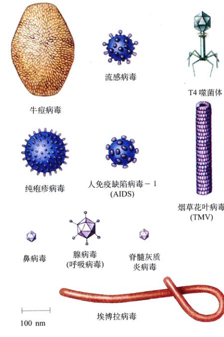
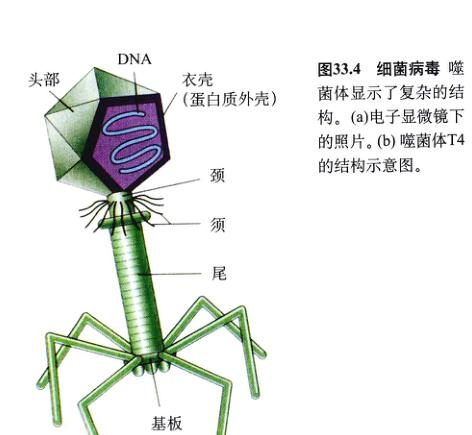
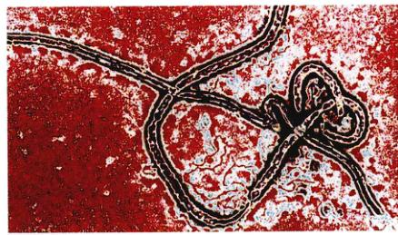

图 33.1 流感病毒 (30 000 ×) 病毒可以形容为“用蛋白质包裹起来的坏消息”，还有什么生物比病毒更简单却对其他生物体产生了巨大的影响呢？
我们对生命多样性的探索之旅，就从病毒开始。病毒就是包裹在蛋白质衣壳内的遗传物质，它甚至都不算是生物体，因为它们不能独立繁殖。由于病毒具有潜在的致病性，它们在生物学上具有重要的意义。你在图 33.1 中看到的病毒就可以导致广为人知的疾病——流感。另外有些病毒可以导致艾滋病、脑灰质炎，有些病毒还可以导致癌症的发生。许多科学家试图了解病毒基因的特性，以及它们是如何工作的。40多年来，病毒的研究都集中在遗传学和分子生物学方面。将来，病毒有望成为将基因由一个生物体转移到另一个生物体的重要工具具之一。目前，病毒已经应用于人类遗传病的治疗。
生命和非生命之间的界限对生物学家来说是非常清楚的。生命有机体是由细胞组成的，可以生长，并能在 DNA 编码的遗传信息的指导下进行独立的自我繁殖。地球上能够满足这个标准的最简单的生物是细菌。比细菌还要简单的是病毒。通过这一节的学习，你将了解到病毒甚至简单到不能满足“活”的标准。
病毒 (virus) 只有生物体的一部分特性。严格地说，病毒是“寄生”的化学物质，是被蛋白质包裹的 DNA 或 RNA 的片段。它们不能独立地自我繁殖，因此不被生物学家承认为“活”的生物。它们可以在细胞内繁殖，并常给寄主带来灾难性的损害。早期认为，病毒介于生命和非生命之间的理论已经被抛弃了。现在认为，病毒是生物体中分离出来的基因组片段，因为科学家们发现病毒与真核细胞生物的基因存在着高度的相似性。
病毒在外表和尺寸上有很大的差异。最小的病毒直径大约只有 17 nm，最大直径可以达到 1000 nm (1 mm)（图 33.2）。最大的病毒在光学显微镜下勉强可以看到，一般是用电子显微镜来研究病毒的形态。病毒小得和分子差不多，氢原子的直径大约是 0.1 nm，一个大的蛋白质分子最大直径也只是几百纳米。
生物学家最初开始猜测病毒的存在是在 19 世纪末。欧洲的科学家们试图分离那种导致牲畜口蹄疫 (hoof-and-mouth) 的传染介质，结果表明，传染介质比细菌还要小。进一步的研究告诉人们，这种传染介质不能在溶液中繁殖，换句话说，它只能在其感染的宿主细胞中繁殖。这种传染介质就称为病毒。
1933 年，当生物学家 Wendell Stanley 准备提取并纯化一种叫做烟草花叶病毒 (tobacco mosaic virus, TMV) 的植物病毒时，病毒的真正特性才被发现。令人吃惊的事情发生了，提纯的 TMV 竟然以晶体的形式从溶液中沉淀下来。之所以令人吃惊，是因为只有化学物质才能沉淀，而病毒就像摆在架子上的化学试剂一样沉淀下来，这完全不是生物体的所作所为。因此 Stanley 得出结论，TMV 更应该看作是一种化学物质，而不是一种生物。
在其后的几年中，科学家们解析了 TMV 病毒的结构，发现 Stanley 的结论是正确的。TMV 没有细胞结构，仅仅是化学组分。每一个 TMV 病毒颗粒实际上是两种化学成分的混合物——RNA 和蛋白质。TMV 病毒具有嵌套式结构，是由RNA 芯子和包裹它的蛋白质衣壳组成管状物。将 RNA 和蛋白质分离，提纯并分别储存，然后再重新组装这两种成分，人们发现，重新组装成的 TMV 颗粒完全可以感染健康的烟草植株，该颗粒就是烟草花叶病毒本身，而不是来源于它的那两种单独的化学成分。对其他病毒的实验也得出了同样的结论。
图 33.2 病毒的多样性 图中显示了病毒的多样性和小体积的特点。如果按图中的比例尺，人的一根头发就有 8m 粗。
所有的病毒都具有相同的基本结构——蛋白质包裹着一个核酸芯子。每个病毒颗粒只包含一种核酸，不是 DNA 就是 RNA。DNA 或 RNA 基因或呈线状，或呈环状，或是单链，或是双链。通常根据基因组的特性来给病毒分类。具有 RNA 的病毒往往被称为反转录病毒 (retrovirus)。
图 33.3 噬菌体、植物病毒和动物病毒的结构 (a) 细菌病毒，称为噬菌体，经常有一个比较复杂的结构。(b) 烟草花叶病毒 (TMV) 感染植物，它包含 2130 个相同的蛋白质分子（紫色的），这些蛋白质分子组成了包裹在单链 RNA 链（绿色的）周围的圆柱状的外壳。RNA 芯子决定了病毒的性状，被围绕它紧密包裹的相同的蛋白质分子保护着。(c) 在人类免疫缺陷病毒 (HIV) 中，包裹 RNA 芯子的衣壳外还有一层蛋白质囊膜。
几乎所有的病毒都有蛋白质鞘，或衣壳 (capsid)，包裹着它们的核酸芯子。衣壳由一种或几种多次重复的蛋白质分子组成（图 33.3）。在有些病毒中，衣壳外包着一些特殊的酶。许多动物病毒的衣壳外有囊膜 (envelope)，囊膜富含蛋白质、脂类和糖蛋白。囊膜中的有些物质源于宿主细胞膜，有些来源于病毒的基因。
事实上，几乎每一种生物体上都会有病毒寄生。当然，每一种病毒仅能在极其有限的几种细胞类型中繁殖。一种特定病毒能够寄生的所有合适的细胞统称为这种病毒的寄主范围 (host range)。寄主范围的大小反映了病毒与它的潜在寄主之间协同进化的历史。最新发现的一种疱疹病毒 (herpesvirus)，当它的寄主范围从非洲象扩展到印度象时，就变成致命性的。在动物园中，物种的交叉接触就有可能发生这种情况。有些病毒对它们所寄生的寄主产生了毁灭性的影响，也有许多病毒并不致病，感染也没有什么外在的表现。还有很多病毒可以连续几年保持潜伏状态，直到有特定的信号启动它们的表达。一种生物体内往往有几种不同的病毒，这就是说，病毒的种类可能有成千上万，甚至上亿的种类。而我们现在所认识的只是其中的几千种而已。
一个感染病毒可以看作是一系列的指令，与计算机的程序不无类似之处。计算机的运行是由计算机的操作程序的指令控制的，就如一个细胞的运作是通过 DNA 编码的指令来控制的。一个新指令被引入时，计算机将停止正在做的事情，并用全部的精力来做另外的事情，例如拷贝新引入的程序。这个新的程序并不是计算机本身，当它在计算机之外躺在办公桌上时也不能被拷贝。这个引人的程序，就像一个病毒，只是一系列的指令而已。
病毒只有进入细胞并利用宿主细胞的机制才能进行自我繁殖。病毒在单一类型的核酸 (DNA 或 RNA) 上编码自己的基因，但病毒缺乏核糖体和合成蛋白质所必需的酶类。病毒可以繁殖是因为它们可以利用细胞的遗传机制将其基因翻译成蛋白质，从而制造更多的病毒。
大多数病毒的整体结构不是螺旋形的 (helical) 就是等轴的 (isometric)。螺旋型的病毒，如烟草花叶病毒，看起来呈杆状或线状。等轴的病毒，外表大体上呈球形，但它们的几何外形只有在最高的放大倍率下才能看到。
到目前为止发现的等轴病毒的结构类型是二十面体 (icosahedron)，这是一个由 20 个全等的三角形组成的结构，图 33.2 所示的腺病毒就是这种结构。多数病毒的基本形状都是二十面体。二十面体是网格球顶的基本图案。它是最有效率的对称排列方式，那些线形亚单位能形成一个具有最大内部容积的壳。
噬菌体 (bacteriophage) 是感染细菌的病毒。它们在结构和功能上多种多样，仅仅由于它们都寄生于细菌才归为同一类。许多噬菌体由于具有相当数量的 DNA 和蛋白质，显得大而复杂。有些噬菌体用“T”系列 (T1, T2 等) 来命名，其他的噬菌体也分别给予不同的名称。为了说明这些病毒的多样性，噬菌体 T1 和 T3 都是二十四面体，并具有短短的小尾巴。相反，所谓的 T-偶数噬菌体 (T2、T4 和 T6) 具有一个二十面体的头部，主要由3种蛋白质组成的外壳，一个有领和须 (whisker) 的连接颈部、一个长尾和一个复杂的基板 (base plate)（图 33.4）。
当 T4 噬菌体侵染细菌时，通常至少有一个受噬菌体头部附近颈须 (whisker) 控制的尾丝与寄主细菌细胞壁上的脂蛋白接触。其他的尾丝使噬菌体保持与细菌表面垂直，并让噬菌体的基板吸附到细菌的表面。尾部收缩，尾管穿过基板上的孔，刺穿细菌的细胞壁。头部的内含物——大部分是 DNA 就被注入寄主的细胞质中去了。
一个病毒杀死它们所感染的宿主细胞，复制产生新的病毒，这个繁殖周期就被认为是溶菌周期 (lytic cycle)（图 33.5）。T 系列的噬菌体都是烈性病毒 (virulent virus)，它们在被感染细胞内繁殖并最终溶解（破裂）这些细胞。当然，当它们在宿主细胞内变得有毒时，病毒已经发生了很大的变化。
图 33.4 细菌病毒 噬菌体显示了复杂的结构。(a) 电子显微镜下的照片。(b) 噬菌体 T4 的结构示意图。
许多噬菌体并不立刻杀死被感染的细胞，而是将其核酸整合至被感染的宿主基因组中去。这种在细菌体内的潜伏的病毒叫做原噬菌体 (prophage)。大肠杆菌中的 λ 噬菌体就是这类噬菌体。与研究其他生物颗粒一样，人们已经获得有关 λ 噬菌体的许多信息，测定了其基因的完整序列（由 48 502 个碱基对组成）。其编码的蛋白质中至少有 23 个蛋白与 λ 噬菌体的发育和成熟有关，并且还有许多其他的酶与这些病毒整合到宿主基因组中有关。
一个病毒整合至细胞的基因组中称为溶原性 (lysogeny)。在以后的时间里，噬菌体公从基因组中脱离出来，并开始病毒的繁殖。这种包括基因组整合阶段的繁殖周期叫做溶原周期 (lysogenic cycle)。能够与宿主细胞的基因组整合的病毒叫做溶原病毒 (lysogenic virus) 或温和病毒 (temperate virus)。
图 33.5 噬菌体的溶菌周期和溶原周期 在溶菌周期中，噬菌体以病毒 DNA 独立存在于寄主细胞的细胞质中，病毒的 DNA 通过寄主细胞指导合成新的病毒颗粒，直到病毒溶解寄主杀寄主细胞。在溶原周期中，噬菌体的 DNA 整合进寄主细菌的大环形 DNA 中去，当细菌繁殖时，与细菌 DNA 一起复制。它可能继续复制并产生溶原细菌或者进入溶菌周期，杀死细菌。注意真实的噬菌体相对于细菌来说，比图所示的比例要小得多。
在溶原繁殖周期中，病毒的基因经常表达出来。寄主细胞的 RNA 聚合酶像读取主基因一样读出病毒的基因。有时，病毒基因的表达会给寄主细胞产生重要的影响，以新的方式改变了寄主细胞。将外源 DNA 引入寄主细胞基因组中的遗传改变，叫做转化 (transformation)。当外源 DNA 是由细菌病毒提供时，这个转化过程就叫做噬菌体转化 (phage conversion)。
由病毒基因指导的这种类型的噬菌体转化的一个重要例子就是由一种能引起致命疾病的细菌提供的。这种致病菌——霍乱弧菌 (Vibrio cholerae)——通常是以无毒形式存在的，但是，另一种致病的有毒的形式也会出现。后一种形式的细菌可导致致命的疾病——霍乱 (cholera)。但是细菌是如何从无害的形式转变为致命的形式的呢？这个问题直到不久以前才被人们弄清楚。研究表明，感染霍乱弧菌的噬菌体能将一种编码霍乱毒素的基因引入宿主细胞内，这种基因整合进细胞的染色体中，并与寄主的其他基因一同被翻译出来，这样良性的细菌就变成了致命的介质。这种转变是通过细胞表面的鞭毛产生的（见第 34 章）。进一步的实验证实，没有鞭毛的突变细菌株就能抵抗噬菌体的侵染。这个发现对开发霍乱的疫苗有着重要的意义，尽管迄今为止在这方面还没有获得成功。
动物中存在着众多不同的病毒。要想对这些病毒有一个大致的了解，一个好的办法就是详细地了解一种动物病毒。这里我们将介绍一种能导致获得性免疫缺陷综合征 (acquired immunodeficiency syndrome, AIDS) 的病毒。艾滋病 (AIDS) 是一种发现较近的致命性疾病，1981 年，美国报道了第一例艾滋病病例。之后不久，致病的病毒，即人类免疫缺陷病毒 (Human immunodeficiency virus, HIV) 就在法国和美国的实验室里得到鉴定。这是一种反转录病毒。对 HIV 的研究显示，它和非洲黑猩猩所带的病毒有密切的关系，这暗示着病毒可能是由黑猩猩传染给非洲中部的人的。
被 HIV 病毒感染的人对感染没有抵抗力，几乎所有的艾滋病患者最终都会死于那些非艾滋病患者可以轻松避开的疾病。如果没有得到治疗，已经感染上艾滋病的人没有能活过几年的。不过，通过日常生活的接触使 HIV 病毒从一个感染者身上传染到一个健康者身上的风险几乎是不存在的。然而，经体液如血液、精液、阴道液的传递，或使用未经消毒的注射器是病人和健康者之间传播 HIV 病毒的危险途径。另外，被 HIV 病毒感染的母亲可以在胎儿发育的过程中把病毒传染给未出生的孩子。
在美国，艾滋病发病率的增长极为迅速。据估计，全球大概有 3300 万人感染了 HIV 病毒。他们中的大多数——有可能全部——将被这种疾病击倒。自从艾滋病流行以来，已经有 1600 多万人死于此病。艾滋病在一些非洲国家的发病率已经非常高，并以 20% 的速率在全世界范围内增长。艾滋病的流行将在第 57 章详细介绍。
图 33.6 艾滋病病毒 HIV 颗粒正在从一个感染的 CD4⁺ T 细胞中脱离出来（都是用假色显示）。游离的病毒颗粒能够感染相邻的 CD4⁺ T 细胞。
HIV 携带者没有任何的临床症状，但是具有明显的传染性，这就使得 HIV 的传播难以得到控制。HIV 病毒的潜伏期为什么会长这么长？一个可能是它是要经过 8~10 年的对感染者没有重大伤害的潜伏期才能完成它的感染周期。然而，最终病毒的随机突变，使病毒能够极快地战胜人体的免疫系统，导致艾滋病发作。
在正常的人体中，有一支由特殊细胞（白细胞）组成的部队在血液中巡逻，攻击并摧毁任何入侵的细菌和病毒。在艾滋病患者体内，这支保卫部队被摧毁了。在免疫系统中，需要一种特殊的白细胞，即 CD4⁺ T 细胞来激活其他免疫细胞的作用（将在第 57 章进一步讨论）。而艾滋病患者，HIV 病毒正是 CD4⁺ T 细胞内部，感染并杀死它们直至一个不剩（图 33.6）。没有了这种对免疫系统至关重要的细胞，机体就不能抵御细菌或病毒的入侵。因此艾滋病患者往往死于那些健康人完全可以避免的感染。
人在感染 HIV 病毒后，一般要经过 8~10 年的潜伏期才能出现典型的临床症状。在这么长的潜伏期内，HIV 病毒是如何识别靶细胞的呢？第 7 章曾经讲过，人体内的每一种细胞的表面都包含特殊的糖蛋白标记，使它们与其他相似的细胞间可以相互区别。每一个 HIV 病毒颗粒的表面都具有一种叫叫做 gp120 的糖蛋白，它能与巨噬细胞和 T 细胞等免疫细胞表面的 CD4 糖蛋白特异结合，而巨噬细胞是第一个被感染的细胞。
HIV 病毒感染和清除免疫系统中的关键细胞，推毁人类抗癌和抗感染的能力。HIV 病毒感染人类细胞的途径（图 33.7）是显示动物病毒繁殖的一个极好的例子。大多数其他的病毒感染也遵循同样的各个过程，尽管在侵入和繁殖的细节上会由一些出入。
(1) 黏附：当 HIV 病毒进入人体血液时，病毒可以再全身循环，但是只能感染 CD4⁺ T 细胞。其他部分病毒也是这样，感染的范围很窄。如肝炎病毒只能感染肝细胞，狂犬病毒只能感染脑细胞。
(2) 侵入巨噬细胞：与巨噬细胞的 CD4 受体结合之后，HIV 病毒需要第二个 CD4 受体——CCR5 来通过细胞膜。gp120 与 CD4 结合后，就发生构象变化，使其能与 CCR5 结合。现有的模型显示，在构象变化之后，第二个受体就让 gp120-CD4 的复合物通过细胞膜，引发 HIV 病毒的内含物通过细胞内吞作用进入细胞内，即细胞膜向内凹陷包裹住病毒。
图 33.7 HIV 病毒的感染周期 周期开始和结束时，HIV 病毒颗粒都以游离形式存在于寄主的血液中。这些游离病毒能感染 CD4⁺ 细胞。
(3) 复制：一旦病毒侵入巨噬细胞体内，HIV 病毒就脱去其蛋白质衣壳，留下病毒的 RNA 漂浮在细胞质中，还有病毒外壳中的一种酶。这种酶叫做反转录酶 (reverse transcriptase)，能合成与病毒 RNA 互补的双链 DNA，但是在此过程中常常出错，导致新的变异。合成的双链 DNA 可以指导寄主细胞产生许多的病毒拷贝。HIV 并不把它感染的细胞裂解并杀死，相反，新产生的病毒通过胞外分泌作用逸出细胞。通过这种方法，HIV 病毒可以合成大量的子代，在很长的潜伏期内威胁人体的免疫系统。
(4) 侵入 T 细胞：在此期间，HIV 稳定地复制和变异。最终，HIV 偶然改变了编码 gp120 的基因，也改变了 gp120 蛋白结合第二受体的特异性。这种新形式的 gp120 蛋白质更适于与第二受体——CXCR4 结合。CXCR4 是一种存在于 CD4⁺ T 淋巴细胞表面上的一种受体。很快，机体的 T 淋巴细胞就被 HIV 感染了，并产生了致命性后果。新的病毒随着细胞膜破裂而逸出宿主细胞，并有效地杀死了被感染的 T 细胞。因此，当第二受体替换为 CXCR4 后，紧接着就出现了 T 细胞的急剧减少。这种体内 T 细胞的被阻断了免疫反应，直接引起了艾滋病的发作。接着就是癌症和其他的机会感染随之侵入便失去了免疫能力的人体。
对 HIV 机制的新发现鼓舞人们去设计对付 HIV 的策略。例如：科学家们正在试验用于 HIV 受体的药物或疫苗，研究阻断 CCR5 的可能性，寻找那些被 HIV 病毒感染但还没有发展成艾滋病的病人体内 HIV 病毒受体结的缺陷。图 33.8 总结了最近的一些进展和发现。
在试管中，很多药物都能够抑制 HIV 病毒。包括 AZT 及其类似物（可以抑制病毒核酸复制的药物）和蛋白酶抑制剂（能抑制由 gag、pol 和 env 基因编码的巨大复合蛋白分解成为有功能的衣壳、酶和囊膜片段）。在对照研究中，给患病人混合使用这些药物时，病情得到改善。组合使用一种蛋白酶的抑制剂和两种 AZT 类似物时，很多病人血液中的 HIV 病毒完全被清除。重要的是，所有这些病人都不是在感染后3个月接受这种药物治疗的，这时他们的机体还没有对这些药物中的任何一种产生抗药性。自 20 世纪 90 年代中期引入组合药物疗法 (Combination Drug Therapy) 以来，这种疗法的广泛运用，使得美国的艾滋病死亡率减少了 3/4。艾滋病死亡的人数，从 1995 年的 49 000 降为 1996 年的 36 000，1999 年仅为 10 000 多一点。
不幸的是，这种组合药物疗法并不能彻底清除体内的 HIV 病毒。表面血液中没有病毒了，但仍有少量的病毒潜伏在淋巴组织中。当组合药物疗法停止后，血液中的病毒水平将会再次上升。由于组合药物疗法的不彻底性和其他种种副作用，长期使用组合药物疗法显然不是一个理想的途径。
图 33.8 目前正在研究的治疗艾滋病的新方法 其中的五种方法如下：(1) 组合疗法，包括两种药物，AZT 用来阻断病毒的复制过程，蛋白酶抑制剂用来阻断重要的病毒蛋白质的产生。(2) 利用有缺陷的病毒基因 nef，科学家们可以制造 HIV 病毒疫苗，也在尝试应用药物来抑制 nef 蛋白质的产生。(3) 利用趋化因子来抑制受体 (CXCR4 和 CCR5) 以阻断 HIV 病毒进入 CD4⁺ T 细胞。(4) 通过突变使受体失活也可能是一种可行的方法。(5) CAF 是一种存在于 CD4⁺ T 细胞内的抗病毒因子，可能也能用来阻断 HIV 的繁殖。
最近，在澳大利亚发现了 5 位 HIV 呈阳性者，他们虽然携带带 HIV 14 年，但都没有患艾滋病。他们都是由于输入了一个呈 HIV 阳性却也没有发展为艾滋病人的血。这个事实让科学家们相信，传染到这些人身上的病毒株有某种基因缺陷，因而对人体的免疫系统不能构成有效的危害。接下来的研究发现，这种 HIV 病毒株的 9 个基因中有 1 个存在缺陷。这个存在缺陷的基因叫做 nef 基因，意为负因子 (negative factor)，感染那 6 位澳大利亚人的 HIV 病毒株，其 nef 缺陷型基因似乎只是片段。具有缺陷基因的病毒繁殖能力减弱，使免疫系统能识别病毒。
这个发现为开发艾滋病疫苗带来了令人鼓舞的希望。在此之前，科学家们一直没有找到无害的、能够引起有效免疫反应的 HIV 病毒株。澳大利亚人这种有 nef 基因缺陷的病毒株具有用于疫苗生产的潜能，这种疫苗可以装备人体的免疫系统来抵抗该种或其他 HIV 病毒株的入侵。
这个发现的另一个潜在的用途就是开发一种药物，抑制那些能够加速病毒复制的 HIV 蛋白质的功能。nef 基因编码的蛋白质似乎是 HIV 蛋白质最重要的一种，因为具有 nef 缺陷型基因的病毒不能复制，如同在 6 个澳大利亚病人所看到的情况。目前正试图研究出一钟针对 nef 蛋白的药物。
在实验室里，称为趋化因子 (chemokine) 的化学药物似乎能够抑制 HIV 的感染，这种作用是通过适合并隔离 CCR5 和 CXCR4 共同受体得以实现。正如人们所希望的，在那些长期感染了 HIV 病毒却没有得艾滋病的人的血液中，趋化因子的含量水平都比较高。
人们急切地寻找那些能够抑制 HIV 的趋化因子，但不是所有的结果都让人感到鼓舞。研究者报告指出，在病情没有发展和病情急剧发展的病人间，趋化因子的水平并无区别，但另一种 CAF 因子（CD8⁺ 细胞抗病毒因子）的水平在这两种病人中却是不相同的。研究者们还没能够把 CAF 提取出来，CAF 似乎不是通过阻断那些 HIV 的受体起作用的，而是阻止病毒的复制过程。人们仍然在研究如何应用趋化因子来防止 HIV 感染，或者通过增加趋化因子的数量，或者使受体 CCR5 失去作用。当然，研究 CAF 可能对研究艾滋病的治疗和预防来说是个更好的目标。
把趋化因子作为药物的一个主要的问题是：趋化因子会导致免疫系统的炎症反应 (inflammatory response)，趋化因子的功能就是吸引白细胞到达受感染区域。趋化因子在小剂量和局部都能发挥很好的作用，但是，如果大剂量使用趋化因子，就会引起最初感染后果更严重的炎症反应。注射趋化因子可能会妨碍免疫系统对局部的趋化因子的反应能力，或者就会引发失控的炎症反应。所以，科学家们提醒人们，注射趋化因子会使病人更容易受感染，他们还在寻找用趋化因子来治疗艾滋病的更好的方法。
缺失了 32 个碱基对的基因所编码的 CCR5 受体似乎也能阻碍 HIV 的感染。在那些感染了 HIV 的高危个体中，只要具有这种突变的纯合子就不容易发展为艾滋病。在一项 1955 人所做的研究中，科学家们发现，没有一个体是既感染了 HIV 又具有上述突变等位基因的纯合子。在高加索人群中，这种等位基因比较普遍 (10%~11%)，而在非洲裔美国人群中就比较少见 (2%)，在非洲和亚洲人群中就没有这种等位基因的存在。通过破坏 CCR5 来治疗艾滋病的前景看好，正如研究显示，人如果没有 CCR5 的存在照样活得有滋有味。现在很多实验室都在尝试如何阻断或者使 CCR5 受体失活。
人类从几千年前就知道并一直害怕病毒引起的疾病。在病毒引起的疾病（表 33.1）中有流行性感冒、天花、传染性肝炎、黄热病、脑灰质炎、狂犬病、艾滋病和其他许多还不知道的疾病。此外，病毒也与一些癌症和白血病有关。在许多自体免疫性疾病中，如多发性硬化症 (multiple sclerosis)、风湿性关节炎、糖尿病等，都与某种特定的病毒有关。从病毒的这些影响看来，很容易理解为什么诺贝尔生理医学奖获得者 Peter Medawar 先生要对病毒下这么一个定义：“病毒是用蛋白质包裹的一段坏消息。”病毒不仅导致人类的疾病，还导致农业、林业上的损失，并使自然生态系统的生产力下降。
在人类历史上，流感病毒 (influenza virus) 可能是最致命的病毒了。在 1918—1919 年的 18 个月中，美洲和欧洲死于流感的人数达到 2200 万，这真是一个骇人听闻的数字。
(1) 病毒类型：流感病毒属于动物反转录病毒。——
| 疾 病 | 病原体 | 宿 主 | 携带者 / 流行病学 |
|---|---|---|---|
| 艾滋病 | HIV | STD | 摧毁免疫系统，导致因感染或癌症引起的死亡。到 1998 年已有 3300 万个病例。 |
| 水痘 | 人类疱疹病毒 3 | 人类 | 通过感染者之间的接触传染。不能治愈，极少致命。1995 年初，疫苗在美国批准上市。 |
| 埃博拉 | 线状病毒 | 不明 | 急性出血热，病毒攻击结缔组织，导致大出血甚至死亡。未加治疗的情况下最高病死率达到 50%~90%。出血热的暴发局限在非洲中部的局部地区。 |
| 乙型肝炎 | 乙型肝炎病毒 (HBV) | 人类 | 通过接触被感染的体液而传染。美国人口中有 1% 的人为感染者。疫苗，不能治愈。可能会致命。 |
| 疱疹 | 单纯疱疹病毒 (HSV) | 人类 | 发烧，出水泡。最初通过接触感染者的唾液传播。世界范围内流行。不能治愈。有潜伏期，病毒可以连续几年处于休眠状态。 |
| 流感 | 流感病毒 | 人类、鸭子 | 历史上的主要杀手（1918-1919 年间 18 个月内导致 2200 万人死亡）。野生的亚洲鸭、鸡、猪等是主要的携带者。鸭子不受病毒的影响，因为病毒在鸭子体内繁殖时，其抗原基因改变了，产生了新的流感毒株。 |
| 麻疹 | 副黏病毒 | 人类 | 感染者有很强的传染性，接触传染。已有疫苗。一般发生在儿童时期，没有什么严重的后果，而传染给成年人却极其危险。 |
| 单核细胞增多症 | Epstein-Barr 病毒 (EBV) | 人类 | 通过患者的唾液传染。可能会持续几个星期，年轻人易患。没有治愈方法。极少致命。 |
| 腮腺炎 | 副黏病毒 | 人类 | 通过患者的唾液传染。已有疫苗；极少致命。不能治愈。 |
| 肺炎 | 流感病毒 | 人类 | 肺部的急性感染，如不治疗通常致命。 |
| 脊髓灰质炎 | 脊髓灰质炎病毒 | 人类 | 中枢神经系统的急性感染，可以导致麻痹，经常是致命性的。1954 年疫苗研制成功。之前，单是美国每年就有 60 000 人患这种病。 |
| 狂犬病 | 狂犬病毒 | 野生的和家养的犬科动物（狗、狐狸、狼、山狗）、蝙蝠和浣熊等。 | 患病动物咬伤引起的急性病毒性脑脊髓炎。不治疗会致命。 |
| 天花 | 天花病毒 | 以前是人类，现在只存于两个实验室中，可能已绝迹。 | 历史上的主要杀手，最后一例天花出现在 1977 年。一次世界性的疫苗战把这种疾病从世界上彻底消失了。 |
| 黄热病 | 黄病毒 | 人和蚊子 | 通过蚊虫叮咬传播。是在巴拿马运河的开辟中导致死亡的主要原因。如果不治疗，最高病死率可达 60%。 |
图 33.9 流感病毒 (a) TEM，所谓的“禽流感”病毒，A(H5N1)，1997 年在香港第一次感染人类。(b) 流感病毒的结构示意图。经过富含脂类的外层囊膜的横切面可以看到盘曲的 RNA，还有两种钉状的蛋白质突起及内层的蛋白质衣壳。
单个独立的病毒就像一根扎了钉子的棍子，含有两种蛋白质（图 33.9）。流感病毒一般有 3 种类型，根据它们衣壳（内膜）蛋白质来区分。A 型流感病毒引起人类大部分流感的流行，并且也可以在其他哺乳动物和鸟类中流行。B 型和 C 型病毒的寄主范围就很小得多，只感染人类，并很少引起严重的健康问题。
(2) 亚型：流感病毒的不同的株称为亚型，其差异就在于蛋白质“钉子”。在这些蛋白质中，血细胞凝集素 (hemagglutinin, H) 能够帮助病毒进入细胞内，而神经氨酸酶 (neuraminidase, N) 能够让新产生的病毒从细胞中释放出来。病毒的 RNA 在不精确的复制中发生突变，导致部分 H 分子中含有那种容易发生变化的“热点”部分。在每一代的繁殖中，10 万个病毒中大约会出现 1 个病毒发生点突变，引起这种“钉子”蛋白的变异。这些 H 分子的高可变区就是人体抗体的目标。但这些靶点的高变异性增强了病毒的繁殖力，也限制了我们制造特效病毒疫苗的能力。正是 H 分子和 N 分子的不断变异，产生众多的不同病毒亚型，这就需要不同的疫苗来防治。A 型流感病毒目前划分为 13 种不同的 H 亚型和 9 种不同的 N 亚型，每一种亚型都需要相应的疫苗。导致 1968 年香港流感的病毒就是具有 3 型 H 分子和 2 型 N 分子的 A 型流感病毒，即所谓的 A (H3N2) 流感病毒。
(3) 重组的重要性：对付流感病毒所遇到的最大困难不是病毒的变异，而是病毒中基因的重组。通过基因重组，病毒基因很容易被再分配，有时 H 分子和 N 分子以新的形式组合起来，就能导致只能识别旧组合的人体抗体不能识别流感病毒。这种类型的病毒重组似乎是导致 20 世纪发生的 3 次主要的流感大流行（世界范围流行的）的原因。1918 年的“流感杀手”——A(H1N1)，杀死了 4000 万人，1957 年的亚洲流感——A(H2N2)，杀死了不下 10 万的美国人；1968 年的香港流感——A(H3N2)，仅在美国就感染了 5000 万人，其中有 7 万人丧生。
流感病毒的新毒株往往源于远东，这一现象并不是偶然的。在远东，养殖密集的家禽和猪，这 3 种动物在亚洲的养殖密度很高，而且与人类关系密切。猪就可以从鸟类和人类身上传播流感病毒，并且单个动物常常可以同时感染多种不同的毒株。这种情况导致不同毒株间容易发生遗传重组，产生新的 H 和 N 重组亚型，如引起香港流感的病毒就是由来源于鸭子的 A (H3N8) 和来源于人类的 A (H2N2) 重组而成的。产生的新毒株 A (H3N2) 反过来再感染人类，造成又一次大流行，因为人类以前从来没有经历过 H 和 N 的这种新组合。
1997 年，香港曾经出现过一种潜在的致命的流感病毒——A(H5N1)，与以前的流感病毒株不一样，A(H5N1) 可以直接从鸟类传染给人类，那次是鸡作为传染源。尽管第一次从人体内分离得到 A (H5N1) 病毒是在 1961 年，但 1997 年春，该病毒却毁灭了香港所有的鸡群。值得庆幸的是，这种病毒株似乎不容易在人群中传播，这就使得感染人数始终保持在一个较低的水平。政府卫生官员们担心 A (H5N1) 毒株的基因可能会和其他人类病毒株重组形成新的在人群中广泛传播的病毒株，为了保证人类的安全，他们下令宰杀了香港所有的鸡（约 120 万只）。
有时候，起源于一种生物的病毒会传染给另一种生物，从而扩大了病毒的寄主范围。然而，这种寄主范围的扩大对新的寄主是致命性的。比如说，HIV 病毒就是起源于黑猩猩，然后才传染到人类身上的；流感病毒本来就是一种鸟类病毒。这种起源于一种生物再传染给另一种生物并导致疾病的病毒就叫做新兴病毒 (emerging virus)。在我们的这个飞行时代，新兴病毒代表了一个相当大的威胁，因为飞机可以让被感染者迅速在世界各地流动，使感染的范围蔓延。
在所有的致命性最大的新兴病毒中，有一类产生于非洲中部的线状病毒 (filamentous virus)，可以导致严重的出血热。由于它的病死率可以达到 50%，这种所谓的线状病毒处于已知的最致命的病毒之列。埃博拉病毒 (Ebola virus)（图 33.10）在非洲中部暴发时，病死率曾经达到 90% 以上。1995 年夏天，埃博拉病毒在扎伊尔暴发，导致 316 人感染，245 人死亡，病死率为 78%。埃博拉病毒最近的一次暴发是 1996 年 2 月在西非的加蓬。埃博拉病毒的自然寄主尚不明确。
另一种新兴病毒导致了 1993 年美国西南部的出血性感染的突然暴发。这种极具致命性的疾病很快被认定为汉坦病毒 (hantavirus) 引起的。汉坦病毒是一种啮齿动物有关的单链 RNA 病毒。汉坦病毒是通过啮齿类动物排泄物污染人类居住环境，继而传染给人类的。尽管人类认识汉坦病毒已经有了较长时间，但这与次暴发被认为是由于在那个区域不同寻常地出现了大批啮齿类动物，还伴随出现了比往年冬季高得多的降雨量。
图 33.10 埃博拉病毒 这种病毒导致的病死率高达 90%，但在西非只是散发的。医疗工作者正在努力寻找该病毒的自然宿主，以便制定应对这种疾病传染的策略。
通过对流行病的调查和研究，科学家们已经确定了某些病毒感染与随后发展的癌症之间的联系。例如，慢性乙型肝炎病毒的感染与肝癌的联系，宫颈癌 (cervical carcinoma) 与某些乳头瘤病毒 (papillomavirus) 感染的联系。据估计，在全世界的癌症病例中，大约有 15% 的癌症患者与病毒感染有关。病毒可以通过引起受感染的细胞的癌基因 (oncogene) 的表达而改变人体的发育特性。某些病毒或者能激活寄主本身的原癌基因 (proto-oncogenes)（见第 18 章），或者能引入病毒的致癌基因，并整合至寄主的基因组中。病毒诱发的癌症不仅仅是感染的问题。癌症涉及细胞基因复杂的相互作用，还需要一系列的发育过程。
数十年来，科学家们一直对一种致命性脑疾病感到迷惑不解。这些病有不寻常的特征，那就是在病人感染后往往要经过数年甚至数十年才能察觉出来。因为神经元的死亡，导致感染者的脑部产生许多空洞，形成显着的海绵状的外表。这种病叫做传染性海绵状脑疾病 (transmissible spongiform encephalopathy, TSE)。这类病还包括羊群中的搔痒症 (scrapie)、牛群中的疯牛病 (mad cow) 和人类中的苦鲁病 (kuru)（新几内亚震颤病）、克雅氏病 (Creutzfeldt-Jakob disease, CJD)。
TSEs 疾病可以通过把感染个体的脑组织注入受体动物的脑而传播，还可以通过组织的移植而传播，而更明显的是通过食物传播。苦鲁病在巴布亚新几内亚人群 (Fore people) 中就比较普遍，那是因为他们有食人的风俗，更确切地说是吸食感染过的脑。20 世纪 90 年代，英国疯牛病泛滥，就是因为饲养牛的饲料是用屠宰后畜体的骨肉做的，因为这样可以提高饲料中的蛋白质含量。就像巴布亚新几内亚的某些人一样，那些英国的牛群就是吃了死于疯牛病的牛组织而发病的。
图 33.11 朊是如何产生的 错误折叠的朊似乎可以仅仅通过接触正常的朊蛋白就能导致它们错误折叠。当以不同方式错误折叠的朊（蓝色）接触正常的朊时，正常的朊蛋白以同样的方式错误折叠。
20 世纪 60 年代，英国的研究者 Alper 和 Griffith 注意到，TSEs 在接受能够破坏 DNA 或 RNA 的放射线照射后仍然具有感染性。他们认为感染的原因是蛋白质。他们猜想，这个蛋白质一般处于某一折叠状态，但有时会出现错误折叠，然后它会催化其他蛋白质发生同样的错误折叠，使错误折叠就像一个链式反应一样扩散开来。这个另类解释并没有得到科学界的认可，因为它违反了分子生物学的一个关键的定律：只有 DNA 或 RNA 才是遗传物质，能把遗传信息从一代传给另一代。
20 世纪 70 年代早期，医师 Stanley Prusiner 由于受到一名死于克雅氏病 (CJD) 病人的刺激，开始研究 TSEs。他开始对 Alper 和 Griffith 的假说感兴趣。他怎么努力也没法在感染了 TSEs 的标本中找到任何核酸或是病毒存在的证据。于是，他得出与 Alper 和 Griffith 一样的结论：这种具有感染性的物质是一种蛋白质。1982 年，他发表论文阐明这一观点，他称这种蛋白质为朊病毒 (Prion)，即“似蛋白质的感染性颗粒” (proteinaceous infectious particle)。
经过 20 多年的辛勤工作，Prusiner 搜集证据证明了朊病毒在引发 TSEs 病中起着关键的作用。科学界——开始并不认可 Prusiner 的反传统的结论，但最终 Prusiner 和其他他的实验室所做的实验说服了大多数人。例如：当 Prusiner 把不同的异常构象的朊病毒注入不同的寄主时，寄主体内会产生新的朊病毒，构象与注入的朊病毒一模一样（图 33.11）。在另一个著名的实验中，Charles 发现，缺乏 Prusiner 朊病毒转基因鼠对 TSE 的感染具有免疫力。但是，如果将感染了朊病毒的脑组织移植入该小鼠，被植入的组织（不是脑的其余部分）也会感染 TSE 病。1997 年，Prusiner 因他在朊病毒方面的工作而获得了诺贝尔生理医学奖。
类病毒 (viroid) 非常微小，是裸露的 RNA 分子，只有几百个核苷酸那么长，是植物感染的重要原因。最近一次类病毒的暴发杀死了菲律宾 1000 万棵椰子树。现在还不清楚类病毒是如何致病的。有一个线索是，类病毒的序列像核糖体 RNA 基因的内含子序列。这些序列能够催化 DNA 的剪切——也许类病毒正是通过、破坏染色体的完整性而起作用的。